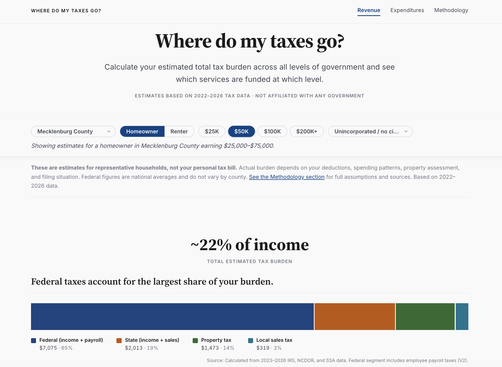
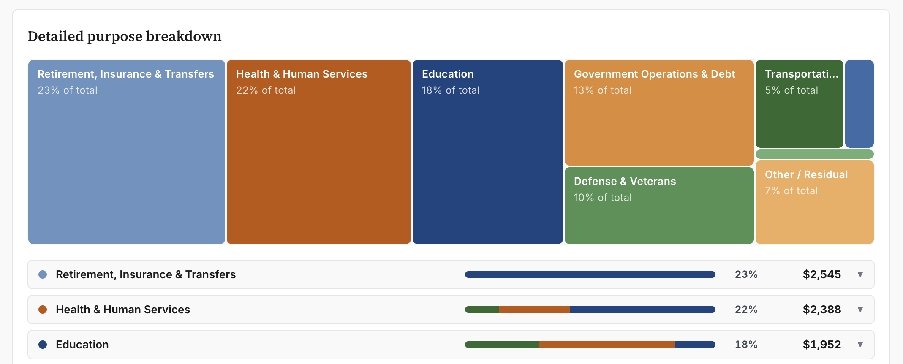
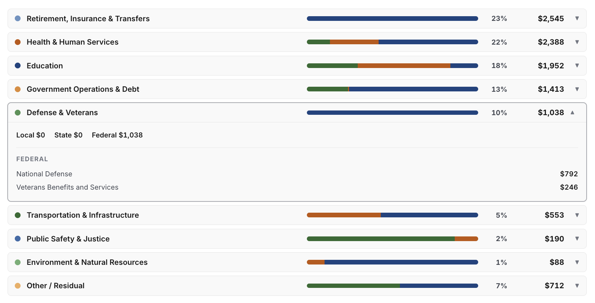

Ever wondered exactly how much you spend on K-12 education each year? This tool helps North Carolina residents see how their state, county, and local taxes are collected and where that money is actually spent. Users can estimate their annual tax burden by county, income bracket, and housing status across property, sales, state income, federal income, and payroll taxes, then trace that estimate directly into spending categories like education, public safety, and infrastructure.


